Deep learning：五十一(CNN的反向求导及练习)
前言：
CNN作为DL中最成功的模型之一，有必要对其更进一步研究它。虽然在前面的博文Stacked CNN简单介绍中有大概介绍过CNN的使用，不过那是有个前提的：CNN中的参数必须已提前学习好。而本文的主要目的是介绍CNN参数在使用bp算法时该怎么训练，毕竟CNN中有卷积层和下采样层，虽然和MLP的bp算法本质上相同，但形式上还是有些区别的，很显然在完成CNN反向传播前了解bp算法是必须的。本文的实验部分是参考斯坦福UFLDL新教程UFLDL：Exercise: Convolutional Neural Network里面的内容。完成的是对MNIST数字的识别，采用有监督的CNN网络，当然了，实验很多参数结构都按照教程上给的，这里并没有去调整。
实验基础：
CNN反向传播求导时的具体过程可以参考论文Notes on Convolutional Neural Networks, Jake Bouvrie，该论文讲得很全面，比如它考虑了pooling层也加入了权值、偏置值及非线性激发(因为这2种值也需要learn)，对该论文的解读可参考zouxy09的博文CNN卷积神经网络推导和实现。除了bp算法外，本人认为理解了下面4个子问题，基本上就可以弄懂CNN的求导了（bp算法这里就不多做介绍，网上资料实在是太多了），另外为了讲清楚一些细节过程，本文中举的例子都是简化了一些条件的，且linux下文本和公式编辑太难弄了，文中难免有些地方会出错，大家原谅下。
首先我们来看看CNN系统的目标函数，设有样本(xi, yi)共m个，CNN网络共有L层，中间包含若干个卷积层和pooling层，最后一层的输出为f(xi)，则系统的loss表达式为(对权值进行了惩罚，一般分类都采用交叉熵形式)：
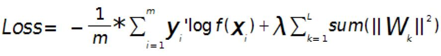
问题一：求输出层的误差敏感项。
现在只考虑个一个输入样本(x, y)的情形，loss函数和上面的公式类似是用交叉熵来表示的，暂时不考虑权值规则项，样本标签采用one-hot编码，CNN网络的最后一层采用softmax全连接(多分类时输出层一般用softmax)，样本(x,y)经过CNN网络后的最终的输出用f(x)表示，则对应该样本的loss值为:
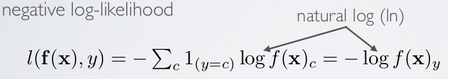
其中f(x)的下标c的含义见公式：
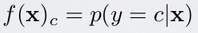
因为x通过CNN后得到的输出f(x)是一个向量，该向量的元素值都是概率值，分别代表着x被分到各个类中的概率，而f(x)中下标c的意思就是输出向量中取对应c那个类的概率值。
采用上面的符号，可以求得此时loss值对输出层的误差敏感性表达式为：
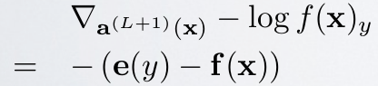
其中e(y)表示的是样本x标签值的one-hot表示，其中只有一个元素为1,其它都为0.
其推导过程如下（先求出对输出层某个节点c的误差敏感性，参考Larochelle关于DL的课件:Output layer gradient）,求出输出层中c节点的误差敏感值：
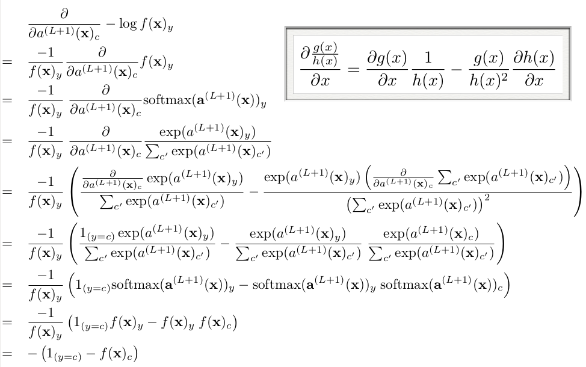
由上面公式可知，如果输出层采用sfotmax，且loss用交叉熵形式，则最后一层的误差敏感值就等于CNN网络输出值f(x)减样本标签值e(y),即f(x)-e(y),其形式非常简单，这个公式是不是很眼熟？很多情况下如果model采用MSE的loss，即loss=1/2*(e(y)-f(x))^2，那么loss对最终的输出f(x)求导时其结果就是f(x)-e(y),虽然和上面的结果一样，但是大家不要搞混淆了，这2个含义是不同的，一个是对输出层节点输入值的导数(softmax激发函数)，一个是对输出层节点输出值的导数(任意激发函数）。而在使用MSE的loss表达式时，输出层的误差敏感项为(f(x)-e(y)).*f(x)’，两者只相差一个因子。
这样就可以求出第L层的权值W的偏导数：
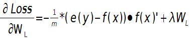
输出层偏置的偏导数：
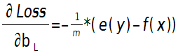
上面2个公式的e(y)和f(x)是一个矩阵，已经把所有m个训练样本考虑进去了,每一列代表一个样本。
问题二：当接在卷积层的下一层为pooling层时，求卷积层的误差敏感项。
假设第l(小写的l，不要看成数字’1’了)层为卷积层，第l+1层为pooling层，且pooling层的误差敏感项为： 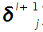 ,卷积层的误差敏感项为：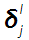 , 则两者的关系表达式为：
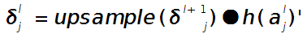
这里符号●表示的是矩阵的点积操作，即对应元素的乘积。卷积层和unsample()后的pooling层节点是一一对应的，所以下标都是用j表示。后面的符号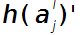表示的是第l层第j个节点处激发函数的导数(对节点输入的导数)。
其中的函数unsample()为上采样过程，其具体的操作得看是采用的什么pooling方法了。但unsample的大概思想为：pooling层的每个节点是由卷积层中多个节点(一般为一个矩形区域)共同计算得到，所以pooling层每个节点的误差敏感值也是由卷积层中多个节点的误差敏感值共同产生的，只需满足两层见各自的误差敏感值相等，下面以mean-pooling和max-pooling为例来说明。
假设卷积层的矩形大小为4×4, pooling区域大小为2×2, 很容易知道pooling后得到的矩形大小也为2*2（本文默认pooling过程是没有重叠的，卷积过程是每次移动一个像素，即是有重叠的，后续不再声明）,如果此时pooling后的矩形误差敏感值如下：
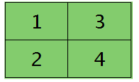
则按照mean-pooling，首先得到的卷积层应该是4×4大小，其值分布为(等值复制)：
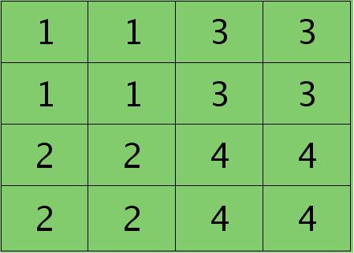
因为得满足反向传播时各层间误差敏感总和不变，所以卷积层对应每个值需要平摊（除以pooling区域大小即可，这里pooling层大小为2×2=4)），最后的卷积层值
分布为：
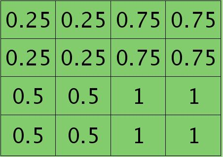
mean-pooling时的unsample操作可以使用matalb中的函数kron()来实现，因为是采用的矩阵Kronecker乘积。C=kron(A, B)表示的是矩阵B分别与矩阵A中每个元素相乘，然后将相乘的结果放在C中对应的位置。比如：
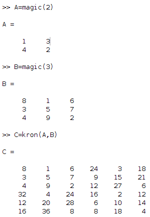
如果是max-pooling，则需要记录前向传播过程中pooling区域中最大值的位置，这里假设pooling层值1,3,2,4对应的pooling区域位置分别为右下、右上、左上、左下。则此时对应卷积层误差敏感值分布为：
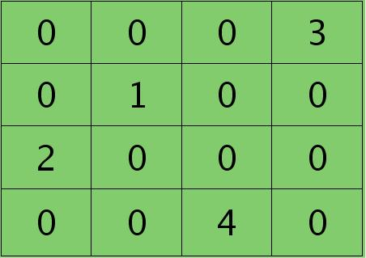
当然了，上面2种结果还需要点乘卷积层激发函数对应位置的导数值了，这里省略掉。
问题三：当接在pooling层的下一层为卷积层时，求该pooling层的误差敏感项。
假设第l层(pooling层)有N个通道，即有N张特征图，第l+1层(卷积层)有M个特征，l层中每个通道图都对应有自己的误差敏感值，其计算依据为第l+1层所有特征核的贡献之和。下面是第l+1层中第j个核对第l层第i个通道的误差敏感值计算方法：
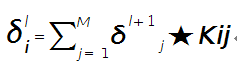
符号★表示的是矩阵的卷积操作，这是真正意义上的离散卷积，不同于卷积层前向传播时的相关操作，因为严格意义上来讲，卷积神经网络中的卷积操作本质是一个相关操作，并不是卷积操作，只不过它可以用卷积的方法去实现才这样叫。而求第i个通道的误差敏感项时需要将l+1层的所有核都计算一遍，然后求和。另外因为这里默认pooling层是线性激发函数，所以后面没有乘相应节点的导数。
举个简单的例子，假设拿出第l层某个通道图，大小为3×3，第l+1层有2个特征核，核大小为2×2，则在前向传播卷积时第l+1层会有2个大小为2×2的卷积图。如果2个特征核分别为：
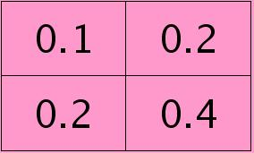 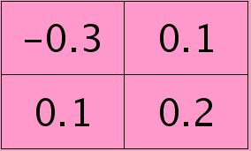
反向传播求误差敏感项时，假设已经知道第l+1层2个卷积图的误差敏感值：
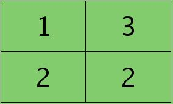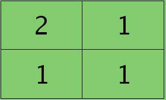
离散卷积函数conv2()的实现相关子操作时需先将核旋转180度(即左右翻转后上下翻转)，但这里实现的是严格意义上的卷积，所以在用conv2()时，对应的参数核不需要翻转（在有些toolbox里面，求这个问题时用了旋转，那是因为它们已经把所有的卷积核都旋转过，这样在前向传播时的相关操作就不用旋转了。并不矛盾）。且这时候该函数需要采用’full’模式，所以最终得到的矩阵大小为3×3,（其中3=2+2-1）,刚好符第l层通道图的大小。采用’full’模式需先将第l+1层2个卷积图扩充，周围填0,padding后如下：
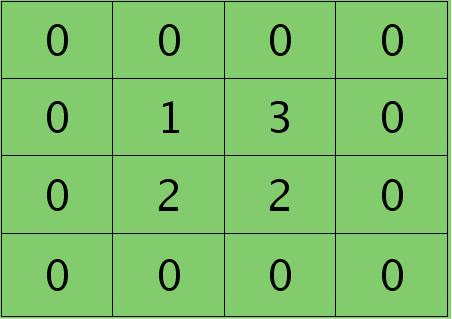 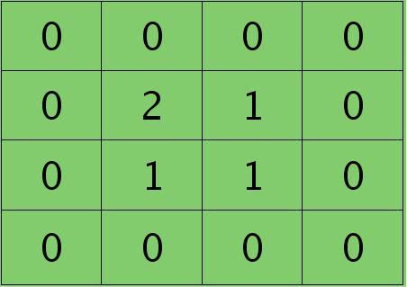
扩充后的矩阵和对应的核进行卷积的结果如下情况：
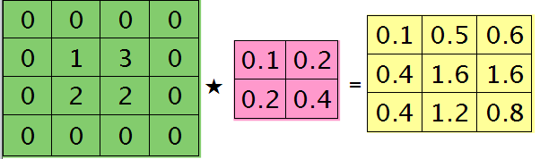
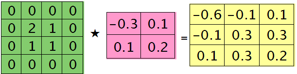
可以通过手动去验证上面的结果，因为是离散卷积操作，而离散卷积等价于将核旋转后再进行相关操作。而第l层那个通道的误差敏感项为上面2者的和，呼应问题三，最终答案为：
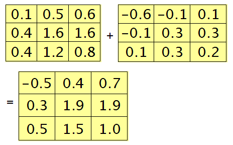
那么这样问题3这样解的依据是什么呢？其实很简单，本质上还是bp算法，即第l层的误差敏感值等于第l+1层的误差敏感值乘以两者之间的权值，只不过这里由于是用了卷积，且是有重叠的，l层中某个点会对l+1层中的多个点有影响。比如说最终的结果矩阵中最中间那个0.3是怎么来的呢？在用2×2的核对3×3的输入矩阵进行卷积时，一共进行了4次移动，而3×3矩阵最中间那个值在4次移动中均对输出结果有影响，且4次的影响分别在右下角、左下角、右上角、左上角。所以它的值为2×0.2+1×0.1+1×0.1-1×0.3=0.3, 建议大家用笔去算一下，那样就可以明白为什么这里可以采用带’full’类型的conv2()实现。
问题四：求与卷积层相连那层的权值、偏置值导数。
前面3个问题分别求得了输出层的误差敏感值、从pooling层推断出卷积层的误差敏感值、从卷积层推断出pooling层的误差敏感值。下面需要利用这些误差敏感值模型中参数的导数。这里没有考虑pooling层的非线性激发，因此pooling层前面是没有权值的，也就没有所谓的权值的导数了。现在将主要精力放在卷积层前面权值的求导上(也就是问题四)。
假设现在需要求第l层的第i个通道，与第l+1层的第j个通道之间的权值和偏置的导数，则计算公式如下：
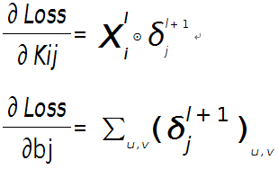
其中符号⊙表示矩阵的相关操作，可以采用conv2()函数实现。在使用该函数时，需将第l+1层第j个误差敏感值翻转。
例如，如果第l层某个通道矩阵i大小为4×4,如下：
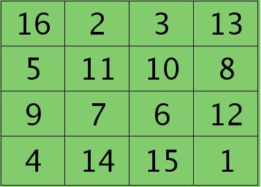
第l+1层第j个特征的误差敏感值矩阵大小为3×3,如下：
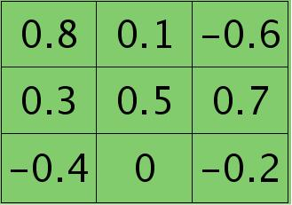
很明显，这时候的特征Kij导数的大小为2×2的，且其结果为：
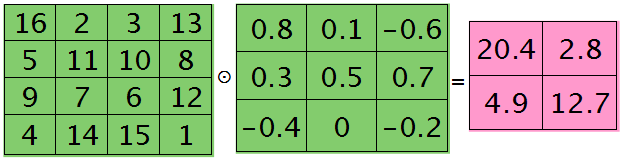
而此时偏置值bj的导数为1.2 ，将j区域的误差敏感值相加即可(0.8+0.1-0.6+0.3+0.5+0.7-0.4-0.2=1.2)，因为b对j中的每个节点都有贡献，按照多项式的求导规则(和的导数等于导数的和)很容易得到。
为什么采用矩阵的相关操作就可以实现这个功能呢？由bp算法可知，l层i和l+1层j之间的权值等于l+1层j处误差敏感值乘以l层i处的输入，而j中某个节点因为是由i+1中一个区域与权值卷积后所得，所以j处该节点的误差敏感值对权值中所有元素都有贡献，由此可见，将j中每个元素对权值的贡献(尺寸和核大小相同)相加，就得到了权值的偏导数了(这个例子的结果是由9个2×2大小的矩阵之和)，同样，如果大家动笔去推算一下，就会明白这时候为什么可以用带’valid’的conv2()完成此功能。
实验总结：
- 卷积层过后，可以先跟pooling层，再通过非线性传播函数。也可以是先通过非线性传播函数再经过pooling层。
- CNN的结构本身就是一种规则项。
- 实际上每个权值的学习率不同时优化会更好。
- 发现Ng以前的ufldl中教程里面softmax并没有包含偏置值参数，至少他给的start code里面没有包含，严格来说是错误的。
- 当输入样本为多个时，bp算法中的误差敏感性也是一个矩阵。每一个样本都对应有自己每层的误差敏感性。
- 血的教训啊，以后循环变量名不能与终止名太相似，一不小心引用下标是就弄错，比如for filterNum = 1:numFilters 时一不小心把下标用numFilters去代替了，花了大半天去查这个debug.
7. matlab中conv2()函数在卷积过程中默认是每次移动一个像素，即重叠度最高的卷积。
实验结果：
按照网页教程UFLDL：Exercise: Convolutional Neural Network和UFLDL：Optimization: Stochastic Gradient Descent，对MNIST数据库进行识别，完成练习中YOU CODE HERE部分后，该CNN网络的识别率为：
95.76%
只采用了一个卷积层+一个pooling层+一个softmax层。卷积层的特征个数为20,卷积核大小为9×9, pooling区域大小为2×2.
在进行实验前，需下载好本实验的标准代码：https://github.com/amaas/stanford_dl_ex。
然后在common文件夹放入下载好的MNIST数据库，见http://yann.lecun.com/exdb/mnist/.注意MNIST文件名需要和代码中的保持一致。
实验代码：
cnnTrain.m:

%% Convolution Neural Network Exercise % Instructions % ------------ % % This file contains code that helps you get started in building a single. % layer convolutional nerual network. In this exercise, you will only % need to modify cnnCost.m and cnnminFuncSGD.m. You will not need to % modify this file. %%====================================================================== %% STEP 0: Initialize Parameters and Load Data % Here we initialize some parameters used for the exercise. % Configuration imageDim = 28; numClasses = 10; % Number of classes (MNIST images fall into 10 classes) filterDim = 9; % Filter size for conv layer,9*9 numFilters = 20; % Number of filters for conv layer poolDim = 2; % Pooling dimension, (should divide imageDim-filterDim+1) % Load MNIST Train addpath ./common/; images = loadMNISTImages('./common/train-images-idx3-ubyte'); images = reshape(images,imageDim,imageDim,[]); labels = loadMNISTLabels('./common/train-labels-idx1-ubyte'); labels(labels==0) = 10; % Remap 0 to 10 % Initialize Parameters,theta=(2165,1),2165=9*9*20+20+100*20*10+10 theta = cnnInitParams(imageDim,filterDim,numFilters,poolDim,numClasses); %%====================================================================== %% STEP 1: Implement convNet Objective % Implement the function cnnCost.m. %%====================================================================== %% STEP 2: Gradient Check % Use the file computeNumericalGradient.m to check the gradient % calculation for your cnnCost.m function. You may need to add the % appropriate path or copy the file to this directory. DEBUG=false; % set this to true to check gradient %DEBUG = true; if DEBUG % To speed up gradient checking, we will use a reduced network and % a debugging data set db_numFilters = 2; db_filterDim = 9; db_poolDim = 5; db_images = images(:,:,1:10); db_labels = labels(1:10); db_theta = cnnInitParams(imageDim,db_filterDim,db_numFilters,... db_poolDim,numClasses); [cost grad] = cnnCost(db_theta,db_images,db_labels,numClasses,... db_filterDim,db_numFilters,db_poolDim); % Check gradients numGrad = computeNumericalGradient( @(x) cnnCost(x,db_images,... db_labels,numClasses,db_filterDim,... db_numFilters,db_poolDim), db_theta); % Use this to visually compare the gradients side by side disp([numGrad grad]); diff = norm(numGrad-grad)/norm(numGrad+grad); % Should be small. In our implementation, these values are usually % less than 1e-9. disp(diff); assert(diff < 1e-9,... 'Difference too large. Check your gradient computation again'); end; %%====================================================================== %% STEP 3: Learn Parameters % Implement minFuncSGD.m, then train the model. % 因为是采用的mini-batch梯度下降法，所以总共对样本的循环次数次数比标准梯度下降法要少 % 很多，因为每次循环中权值已经迭代多次了 options.epochs = 3; options.minibatch = 256; options.alpha = 1e-1; options.momentum = .95; opttheta = minFuncSGD(@(x,y,z) cnnCost(x,y,z,numClasses,filterDim,... numFilters,poolDim),theta,images,labels,options); save('theta.mat','opttheta'); %%====================================================================== %% STEP 4: Test % Test the performance of the trained model using the MNIST test set. Your % accuracy should be above 97% after 3 epochs of training testImages = loadMNISTImages('./common/t10k-images-idx3-ubyte'); testImages = reshape(testImages,imageDim,imageDim,[]); testLabels = loadMNISTLabels('./common/t10k-labels-idx1-ubyte'); testLabels(testLabels==0) = 10; % Remap 0 to 10 [~,cost,preds]=cnnCost(opttheta,testImages,testLabels,numClasses,... filterDim,numFilters,poolDim,true); acc = sum(preds==testLabels)/length(preds); % Accuracy should be around 97.4% after 3 epochs fprintf('Accuracy is %f\n',acc);
cnnConvolve.m:
function convolvedFeatures = cnnConvolve(filterDim, numFilters, images, W, b) %cnnConvolve Returns the convolution of the features given by W and b with %the given images % % Parameters: % filterDim - filter (feature) dimension % numFilters - number of feature maps % images - large images to convolve with, matrix in the form % images(r, c, image number) % W, b - W, b for features from the sparse autoencoder,传进来的w已经是矩阵的形式 % W is of shape (filterDim,filterDim,numFilters) % b is of shape (numFilters,1) % % Returns: % convolvedFeatures - matrix of convolved features in the form % convolvedFeatures(imageRow, imageCol, featureNum, imageNum) numImages = size(images, 3); imageDim = size(images, 1); convDim = imageDim - filterDim + 1; convolvedFeatures = zeros(convDim, convDim, numFilters, numImages); % Instructions: % Convolve every filter with every image here to produce the % (imageDim - filterDim + 1) x (imageDim - filterDim + 1) x numFeatures x numImages % matrix convolvedFeatures, such that % convolvedFeatures(imageRow, imageCol, featureNum, imageNum) is the % value of the convolved featureNum feature for the imageNum image over % the region (imageRow, imageCol) to (imageRow + filterDim - 1, imageCol + filterDim - 1) % % Expected running times: % Convolving with 100 images should take less than 30 seconds % Convolving with 5000 images should take around 2 minutes % (So to save time when testing, you should convolve with less images, as % described earlier) for imageNum = 1:numImages for filterNum = 1:numFilters % convolution of image with feature matrix convolvedImage = zeros(convDim, convDim); % Obtain the feature (filterDim x filterDim) needed during the convolution %%% YOUR CODE HERE %%% filter = W(:,:,filterNum); bc = b(filterNum); % Flip the feature matrix because of the definition of convolution, as explained later filter = rot90(squeeze(filter),2); % Obtain the image im = squeeze(images(:, :, imageNum)); % Convolve "filter" with "im", adding the result to convolvedImage % be sure to do a 'valid' convolution %%% YOUR CODE HERE %%% convolvedImage = conv2(im, filter, 'valid'); % Add the bias unit % Then, apply the sigmoid function to get the hidden activation %%% YOUR CODE HERE %%% convolvedImage = sigmoid(convolvedImage+bc); convolvedFeatures(:, :, filterNum, imageNum) = convolvedImage; end end end function sigm = sigmoid(x) sigm = 1./(1+exp(-x)); end
cnnPool.m:
function pooledFeatures = cnnPool(poolDim, convolvedFeatures) %cnnPool Pools the given convolved features % % Parameters: % poolDim - dimension of pooling region % convolvedFeatures - convolved features to pool (as given by cnnConvolve) % convolvedFeatures(imageRow, imageCol, featureNum, imageNum) % % Returns: % pooledFeatures - matrix of pooled features in the form % pooledFeatures(poolRow, poolCol, featureNum, imageNum) % numImages = size(convolvedFeatures, 4); numFilters = size(convolvedFeatures, 3); convolvedDim = size(convolvedFeatures, 1); pooledFeatures = zeros(convolvedDim / poolDim, ... convolvedDim / poolDim, numFilters, numImages); % Instructions: % Now pool the convolved features in regions of poolDim x poolDim, % to obtain the % (convolvedDim/poolDim) x (convolvedDim/poolDim) x numFeatures x numImages % matrix pooledFeatures, such that % pooledFeatures(poolRow, poolCol, featureNum, imageNum) is the % value of the featureNum feature for the imageNum image pooled over the % corresponding (poolRow, poolCol) pooling region. % % Use mean pooling here. %%% YOUR CODE HERE %%% % convolvedFeatures(imageRow, imageCol, featureNum, imageNum) % pooledFeatures(poolRow, poolCol, featureNum, imageNum) for numImage = 1:numImages for numFeature = 1:numFilters for poolRow = 1:convolvedDim / poolDim offsetRow = 1+(poolRow-1)*poolDim; for poolCol = 1:convolvedDim / poolDim offsetCol = 1+(poolCol-1)*poolDim; patch = convolvedFeatures(offsetRow:offsetRow+poolDim-1, ... offsetCol:offsetCol+poolDim-1,numFeature,numImage); %取出一个patch pooledFeatures(poolRow,poolCol,numFeature,numImage) = mean(patch(:)); end end end end end
cnnCost.m:
function [cost, grad, preds] = cnnCost(theta,images,labels,numClasses,... filterDim,numFilters,poolDim,pred) % Calcualte cost and gradient for a single layer convolutional % neural network followed by a softmax layer with cross entropy % objective. % % Parameters: % theta - unrolled parameter vector % images - stores images in imageDim x imageDim x numImges % array % numClasses - number of classes to predict % filterDim - dimension of convolutional filter % numFilters - number of convolutional filters % poolDim - dimension of pooling area % pred - boolean only forward propagate and return % predictions % % % Returns: % cost - cross entropy cost % grad - gradient with respect to theta (if pred==False) % preds - list of predictions for each example (if pred==True) if ~exist('pred','var') pred = false; end; imageDim = size(images,1); % height/width of image numImages = size(images,3); % number of images lambda = 3e-3; % weight decay parameter %% Reshape parameters and setup gradient matrices % Wc is filterDim x filterDim x numFilters parameter matrix % bc is the corresponding bias % Wd is numClasses x hiddenSize parameter matrix where hiddenSize % is the number of output units from the convolutional layer % bd is corresponding bias [Wc, Wd, bc, bd] = cnnParamsToStack(theta,imageDim,filterDim,numFilters,... poolDim,numClasses); %the theta vector cosists wc,wd,bc,bd in order % Same sizes as Wc,Wd,bc,bd. Used to hold gradient w.r.t above params. Wc_grad = zeros(size(Wc)); Wd_grad = zeros(size(Wd)); bc_grad = zeros(size(bc)); bd_grad = zeros(size(bd)); %%====================================================================== %% STEP 1a: Forward Propagation % In this step you will forward propagate the input through the % convolutional and subsampling (mean pooling) layers. You will then use % the responses from the convolution and pooling layer as the input to a % standard softmax layer. %% Convolutional Layer % For each image and each filter, convolve the image with the filter, add % the bias and apply the sigmoid nonlinearity. Then subsample the % convolved activations with mean pooling. Store the results of the % convolution in activations and the results of the pooling in % activationsPooled. You will need to save the convolved activations for % backpropagation. convDim = imageDim-filterDim+1; % dimension of convolved output outputDim = (convDim)/poolDim; % dimension of subsampled output % convDim x convDim x numFilters x numImages tensor for storing activations activations = zeros(convDim,convDim,numFilters,numImages); % outputDim x outputDim x numFilters x numImages tensor for storing % subsampled activations activationsPooled = zeros(outputDim,outputDim,numFilters,numImages); %%% YOUR CODE HERE %%% convolvedFeatures = cnnConvolve(filterDim, numFilters, images, Wc, bc); %前向传播,已经经过了激发函数 activationsPooled = cnnPool(poolDim, convolvedFeatures); % Reshape activations into 2-d matrix, hiddenSize x numImages, % for Softmax layer activationsPooled = reshape(activationsPooled,[],numImages); %% Softmax Layer % Forward propagate the pooled activations calculated above into a % standard softmax layer. For your convenience we have reshaped % activationPooled into a hiddenSize x numImages matrix. Store the % results in probs. % numClasses x numImages for storing probability that each image belongs to % each class. probs = zeros(numClasses,numImages); %%% YOUR CODE HERE %%% %Wd=(numClasses,hiddenSize),probs的每一列代表一个输出 M = Wd*activationsPooled+repmat(bd,[1,numImages]); M = bsxfun(@minus,M,max(M,[],1)); M = exp(M); probs = bsxfun(@rdivide, M, sum(M)); %why rdivide? %%====================================================================== %% STEP 1b: Calculate Cost % In this step you will use the labels given as input and the probs % calculate above to evaluate the cross entropy objective. Store your % results in cost. cost = 0; % save objective into cost %%% YOUR CODE HERE %%% % cost = -1/numImages*labels(:)'*log(probs(:)); % 首先需要把labels弄成one-hot编码 groundTruth = full(sparse(labels, 1:numImages, 1)); cost = -1./numImages*groundTruth(:)'*log(probs(:))+(lambda/2.)*(sum(Wd(:).^2)+sum(Wc(:).^2)); %加入一个惩罚项 % cost = -1./numImages*groundTruth(:)'*log(probs(:)); % Makes predictions given probs and returns without backproagating errors. if pred [~,preds] = max(probs,[],1); preds = preds'; grad = 0; return; end; %% 将c步和d步合成在一起了 %====================================================================== % STEP 1c: Backpropagation % Backpropagate errors through the softmax and convolutional/subsampling % layers. Store the errors for the next step to calculate the gradient. % Backpropagating the error w.r.t the softmax layer is as usual. To % backpropagate through the pooling layer, you will need to upsample the % error with respect to the pooling layer for each filter and each image. % Use the kron function and a matrix of ones to do this upsampling % quickly. % STEP 1d: Gradient Calculation % After backpropagating the errors above, we can use them to calculate the % gradient with respect to all the parameters. The gradient w.r.t the % softmax layer is calculated as usual. To calculate the gradient w.r.t. % a filter in the convolutional layer, convolve the backpropagated error % for that filter with each image and aggregate over images. %%% YOUR CODE HERE %%% %%% YOUR CODE HERE %%% % 网络结构: images--> convolvedFeatures--> activationsPooled--> probs % Wd = (numClasses,hiddenSize) % bd = (hiddenSize,1) % Wc = (filterDim,filterDim,numFilters) % bc = (numFilters,1) % activationsPooled = zeros(outputDim,outputDim,numFilters,numImages); % convolvedFeatures = (convDim,convDim,numFilters,numImages) % images(imageDim,imageDim,numImges) delta_d = -(groundTruth-probs); % softmax layer's preactivation,每一个样本都对应有自己每层的误差敏感性。 Wd_grad = (1./numImages)*delta_d*activationsPooled'+lambda*Wd; bd_grad = (1./numImages)*sum(delta_d,2); %注意这里是要求和 delta_s = Wd'*delta_d; %the pooling/sample layer's preactivation delta_s = reshape(delta_s,outputDim,outputDim,numFilters,numImages); %进行unsampling操作，由于kron函数只能对二维矩阵操作，所以还得分开弄 %delta_c = convolvedFeatures.*(1-convolvedFeatures).*(1./poolDim^2)*kron(delta_s, ones(poolDim)); delta_c = zeros(convDim,convDim,numFilters,numImages); for i=1:numImages for j=1:numFilters delta_c(:,:,j,i) = (1./poolDim^2)*kron(squeeze(delta_s(:,:,j,i)), ones(poolDim)); end end delta_c = convolvedFeatures.*(1-convolvedFeatures).*delta_c; % Wc_grad = convn(images,rot90(delta_c,2,'valid'))+ lambda*Wc; for i=1:numFilters Wc_i = zeros(filterDim,filterDim); for j=1:numImages Wc_i = Wc_i+conv2(squeeze(images(:,:,j)),rot90(squeeze(delta_c(:,:,i,j)),2),'valid'); end % Wc_i = convn(images,rot180(squeeze(delta_c(:,:,i,:))),'valid'); % add penalize Wc_grad(:,:,i) = (1./numImages)*Wc_i+lambda*Wc(:,:,i); bc_i = delta_c(:,:,i,:); bc_i = bc_i(:); bc_grad(i) = sum(bc_i)/numImages; end %% Unroll gradient into grad vector for minFunc grad = [Wc_grad(:) ; Wd_grad(:) ; bc_grad(:) ; bd_grad(:)]; end function X = rot180(X) X = flipdim(flipdim(X, 1), 2); end
minFuncSGD.m:
function [opttheta] = minFuncSGD(funObj,theta,data,labels,... options) % Runs stochastic gradient descent with momentum to optimize the % parameters for the given objective. % % Parameters: % funObj - function handle which accepts as input theta, % data, labels and returns cost and gradient w.r.t % to theta. % theta - unrolled parameter vector % data - stores data in m x n x numExamples tensor % labels - corresponding labels in numExamples x 1 vector % options - struct to store specific options for optimization % % Returns: % opttheta - optimized parameter vector % % Options (* required) % epochs* - number of epochs through data % alpha* - initial learning rate % minibatch* - size of minibatch % momentum - momentum constant, defualts to 0.9 %%====================================================================== %% Setup assert(all(isfield(options,{'epochs','alpha','minibatch'})),... 'Some options not defined'); if ~isfield(options,'momentum') options.momentum = 0.9; end; epochs = options.epochs; alpha = options.alpha; minibatch = options.minibatch; m = length(labels); % training set size % Setup for momentum mom = 0.5; momIncrease = 20; velocity = zeros(size(theta)); %%====================================================================== %% SGD loop it = 0; for e = 1:epochs % randomly permute indices of data for quick minibatch sampling rp = randperm(m); for s=1:minibatch:(m-minibatch+1) it = it + 1; % increase momentum after momIncrease iterations if it == momIncrease mom = options.momentum; end; % get next randomly selected minibatch mb_data = data(:,:,rp(s:s+minibatch-1)); % 取出当前的mini-batch的训练样本 mb_labels = labels(rp(s:s+minibatch-1)); % evaluate the objective function on the next minibatch [cost grad] = funObj(theta,mb_data,mb_labels); % Instructions: Add in the weighted velocity vector to the % gradient evaluated above scaled by the learning rate. % Then update the current weights theta according to the % sgd update rule %%% YOUR CODE HERE %%% velocity = mom*velocity+alpha*grad; % 见ufldl教程Optimization: Stochastic Gradient Descent theta = theta-velocity; fprintf('Epoch %d: Cost on iteration %d is %f\n',e,it,cost); end; % aneal learning rate by factor of two after each epoch alpha = alpha/2.0; end; opttheta = theta; end
computeNumericalGradient.m:
function numgrad = computeNumericalGradient(J, theta) % numgrad = computeNumericalGradient(J, theta) % theta: a vector of parameters % J: a function that outputs a real-number. Calling y = J(theta) will return the % function value at theta. % Initialize numgrad with zeros numgrad = zeros(size(theta)); %% ---------- YOUR CODE HERE -------------------------------------- % Instructions: % Implement numerical gradient checking, and return the result in numgrad. % (See Section 2.3 of the lecture notes.) % You should write code so that numgrad(i) is (the numerical approximation to) the % partial derivative of J with respect to the i-th input argument, evaluated at theta. % I.e., numgrad(i) should be the (approximately) the partial derivative of J with % respect to theta(i). % % Hint: You will probably want to compute the elements of numgrad one at a time. epsilon = 1e-4; for i =1:length(numgrad) oldT = theta(i); theta(i)=oldT+epsilon; pos = J(theta); theta(i)=oldT-epsilon; neg = J(theta); numgrad(i) = (pos-neg)/(2*epsilon); theta(i)=oldT; if mod(i,100)==0 fprintf('Done with %d\n',i); end; end; %% --------------------------------------------------------------- end
cnnInitParams.m:
function theta = cnnInitParams(imageDim,filterDim,numFilters,... poolDim,numClasses) % Initialize parameters for a single layer convolutional neural % network followed by a softmax layer. % % Parameters: % imageDim - height/width of image % filterDim - dimension of convolutional filter % numFilters - number of convolutional filters % poolDim - dimension of pooling area % numClasses - number of classes to predict % % % Returns: % theta - unrolled parameter vector with initialized weights %% Initialize parameters randomly based on layer sizes. assert(filterDim < imageDim,'filterDim must be less that imageDim'); Wc = 1e-1*randn(filterDim,filterDim,numFilters); outDim = imageDim - filterDim + 1; % dimension of convolved image % assume outDim is multiple of poolDim assert(mod(outDim,poolDim)==0,... 'poolDim must divide imageDim - filterDim + 1'); outDim = outDim/poolDim; hiddenSize = outDim^2*numFilters; % we'll choose weights uniformly from the interval [-r, r] r = sqrt(6) / sqrt(numClasses+hiddenSize+1); Wd = rand(numClasses, hiddenSize) * 2 * r - r; bc = zeros(numFilters, 1); %初始化为0 bd = zeros(numClasses, 1); % Convert weights and bias gradients to the vector form. % This step will "unroll" (flatten and concatenate together) all % your parameters into a vector, which can then be used with minFunc. theta = [Wc(:) ; Wd(:) ; bc(:) ; bd(:)]; end
cnnParamsToStack.m:
function [Wc, Wd, bc, bd] = cnnParamsToStack(theta,imageDim,filterDim,... numFilters,poolDim,numClasses) % Converts unrolled parameters for a single layer convolutional neural % network followed by a softmax layer into structured weight % tensors/matrices and corresponding biases % % Parameters: % theta - unrolled parameter vectore % imageDim - height/width of image % filterDim - dimension of convolutional filter % numFilters - number of convolutional filters % poolDim - dimension of pooling area % numClasses - number of classes to predict % % % Returns: % Wc - filterDim x filterDim x numFilters parameter matrix % Wd - numClasses x hiddenSize parameter matrix, hiddenSize is % calculated as numFilters*((imageDim-filterDim+1)/poolDim)^2 % bc - bias for convolution layer of size numFilters x 1 % bd - bias for dense layer of size hiddenSize x 1 outDim = (imageDim - filterDim + 1)/poolDim; hiddenSize = outDim^2*numFilters; %% Reshape theta indS = 1; indE = filterDim^2*numFilters; Wc = reshape(theta(indS:indE),filterDim,filterDim,numFilters); indS = indE+1; indE = indE+hiddenSize*numClasses; Wd = reshape(theta(indS:indE),numClasses,hiddenSize); indS = indE+1; indE = indE+numFilters; bc = theta(indS:indE); bd = theta(indE+1:end); end
2013.12.30:
微博网友@路遥_机器学习利用matlab自带的优化函数conv2,实现的mean-pooling，可以大大加快速度，大家可以参考。cnnPool.m文件里面：
tmp = conv2(convolvedFeatures(:,:,numFeature,numImage), ones(poolDim),'valid');
pooledFeatures(:,:,numFeature,numImage) =1./(poolDim^2)*tmp(1:poolDim:end,1:poolDim:end);
参考资料：
Deep learning：三十八(Stacked CNN简单介绍)
UFLDL：Convolutional Neural Network
UFLDL：Exercise: Convolutional Neural Network
UFLDL：Optimization: Stochastic Gradient Descent
zouxy09博文：Deep Learning论文笔记之（四）CNN卷积神经网络推导和实现
论文Notes on Convolutional Neural Networks, Jake Bouvrie
Larochelle关于DL的课件:Output layer gradient
github.com/rasmusbergpalm/DeepLearnToolbox/blob/master/CNN/cnnbp.m
https://github.com/amaas/stanford_dl_ex
http://yann.lecun.com/exdb/mnist/